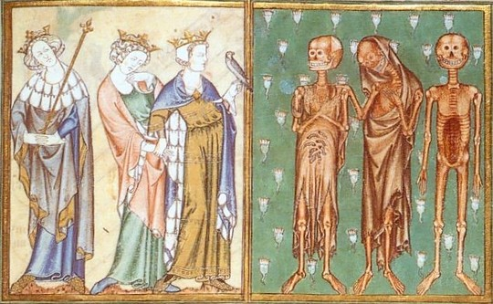
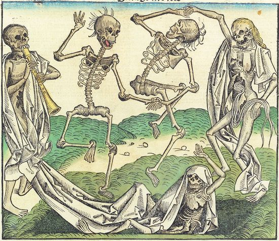

Danse macabre в контексте средневековой литературы
Для того, чтобы понять условия, в которых появился danse macabre, нам недостаточно проанализировать политические, экономические, эпидимологические и духовные события, нам также необходимо обратиться и к литературе, которая уже существовала на тот момент. М.Ю. Реутин также высказывает мнение о том, что danse macabre как жанр сложилась внутри, так называемой покаянной литературы .
Исследователям известна элегия «Я умру», распространенная в Европе также в XIII в. и по своей структуре достаточно сильно напоминающая «Пляску смерти». Более распространенным жанром был «Exemplum», который относился к средневековой латинской литературе с ярко выраженной дидактической функцией. Он возник как украшение в проповедях или рассуждениях и восходил к ораторской практике античности. Его распространяли францисканцы и доминиканцы. В свою очередь, предполагается, что протограф danse macabre на латинском языке также был написан монахом.
Жанром, который часто упоминается вместе с danse macabre, а нередко и встречается внутри одних источников, является легенда о «трех мертвых и трех живых».
Легенда о «трех мертвых и трех живых» представляет собой следующий сюжет: три трупа (как правило, духовенство, но это также могут быть и дворяне) встречаются с тремя живыми (как правило, это герцог, граф и князь, но некоторые версии могут отличаться: например, «De tribus regibus mortuis» – поэма, написанная на среднеанглийском языке в XV в. и представляющая одну из самых поздних версий легенды о «трех мертвых и трех живых». В ней вместо герцога, графа и князя присутствуют три короля). Последние прибывают в ужасе от этой встречи. Далее мертвые говорят с тремя благородными людьми, призывая их покаяться.
Происхождение данной легенды является предметом спора, однако, если учесть, что на данный момент имеется около 20 французских манускриптов, три из которых датируются концом XIII века, а версии на других языках датируются в лучшем случае XIV веком, нами было бы разумно выбрать Францию в качестве страны происхождения. Первый известный текст, содержащий легенду о «трех мертвых и трех живых» датируется примерно 1280 годом и приписывается авторству Бодуэна де Конде. В его тексте в двадцати шести стихах трое живые описывают тот ужас, который они испытали при встрече с мертвецами, и осознают тот урок, который им был показан. Первый мертвец, в свою очередь, утверждает, что живые будут такими же ужасными, как и они – мертвецы, второй обвиняет смерть в подлости и жалуется на ад, третий говорит о скоротечности жизни и необходимости быть готовым к смерти, которая неотвратима для человека.
Danse macabre представляет собой сюжет, когда смерть (или мертвец) увлекает за собой представителя определенного сословия. Количество персонажей и композиция зависят от места и времени создания. Ниже или выше иллюстрации (если она присутствует) написаны стихи, в которых Смерть (или мертвец) обращается к своей жертве, часто угрожающим и обвиняющим тоном, а иногда и вовсе саркастичным или с оттенком юмора. Затем следует мольба человека, полного раскаяния и отчаяния, умоляющего о пощаде, но смерть, несмотря на мольбы людей, вовлекает в пляску всех: от высших духовных лиц, как Папа Римский, кардинал, епископ, аббат и т.д., и таких представителей светского мира, как императора, короля, герцога, графа, рыцаря, врача, купца и даже невинного ребенка. Смерть не смотрит ни на положение в обществе, ни на богатство, ни на пол, ни на возраст тех, кого она забирает – перед ней все равны.
Итак, легенда о «трех мертвых и тех живых» имеет много общего с «пляской смерти». Довольно часто мы можем встретить их внутри одного сборника текстов (например, в Miroer salutaire легенда разделяет мужскую и женскую «пляски смерти»). Кроме того, довольно четко прослеживаются и другие сходства: оба сюжета представляют нам диалог между живыми и мертвыми, который напоминает людям, что они, даже богатые и знатные, подвержены смерти – это передается за счет резкого контраста между приятным изображением живых и мерзостью гниющих трупов.
Впервые само словосочетание «danse macabre» встречается у Жана ле Февра в его произведении «Respit de la Mort», так же известном как «"L'Orologe de la mort»:
«Je fis de macabre la dance
Qui toutes gens maine a la tresche
Et a la fosse les adresce
Qui leur est derraine maison» .
Данный источник, дошедший до нас в нескольких списках, самым древним из которых является Bibliothèque nationale de France. Département des Manuscrits. Français 994, датировать можно достаточно точно, поскольку автор напрямую сообщает эту информацию читателю: «Lan mil.ccc.soixante seize» — «год тысяча триста семьдесят шестой». «Respit de la Mort» идейно схож с danse macabre, однако же им не является; «Respit de la Mort» стилистически, скорее, представляет собой исповедь отдельно взятого человека.